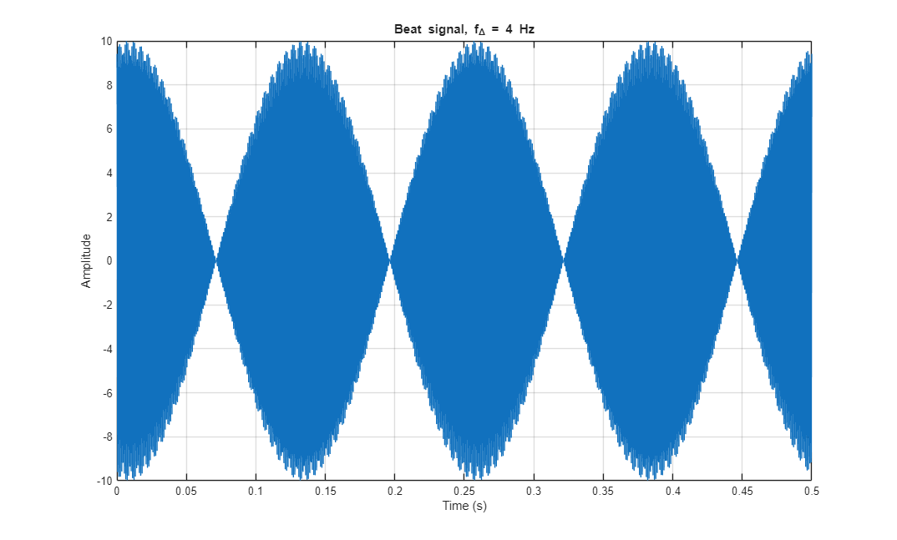
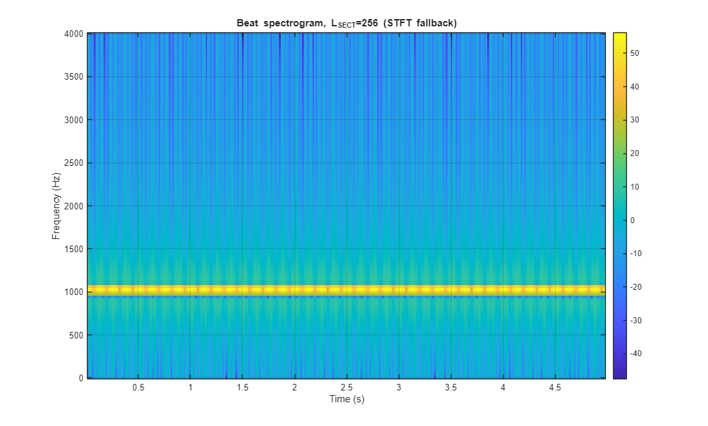
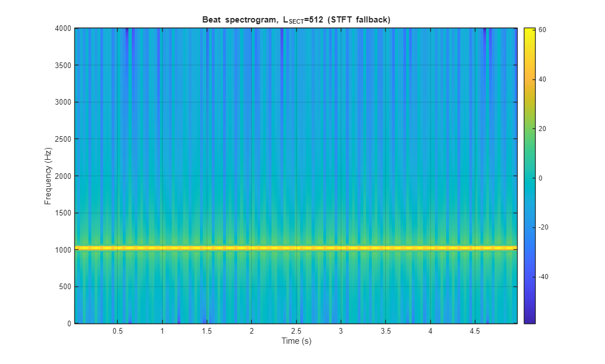
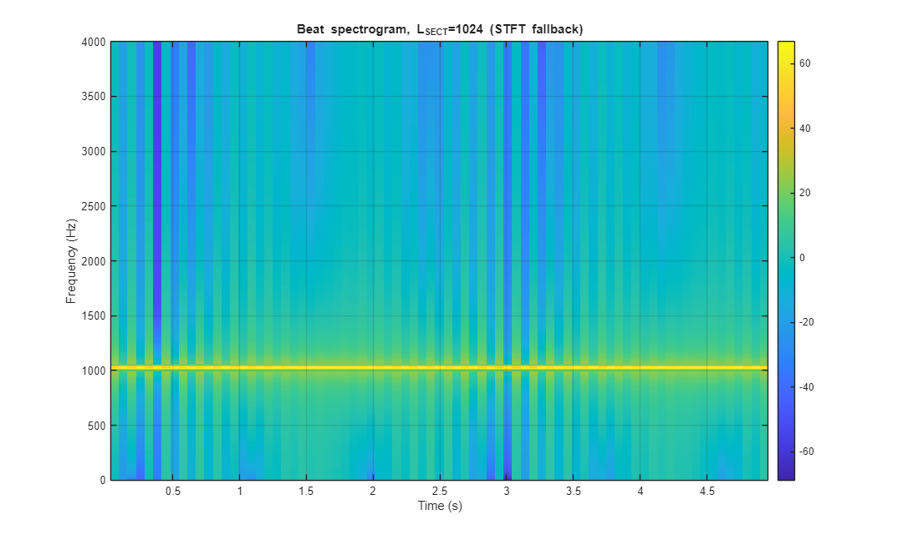
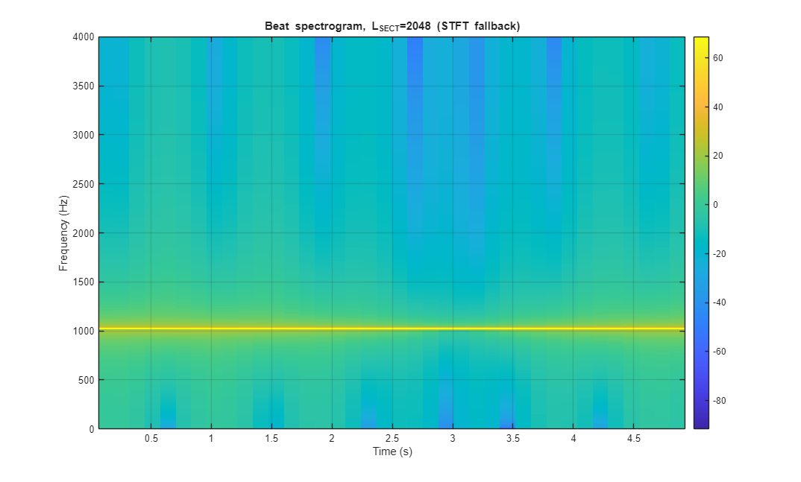
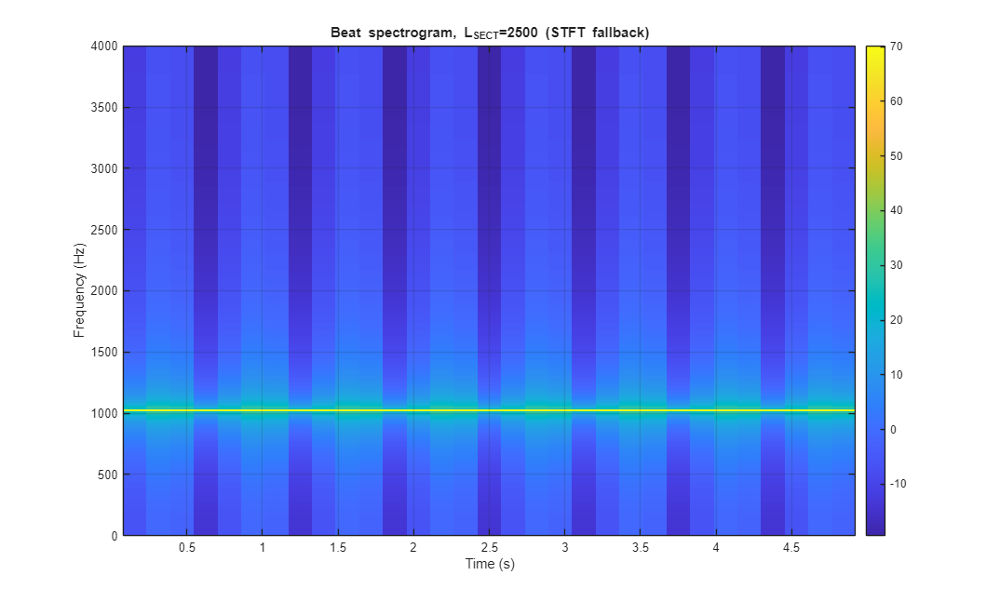
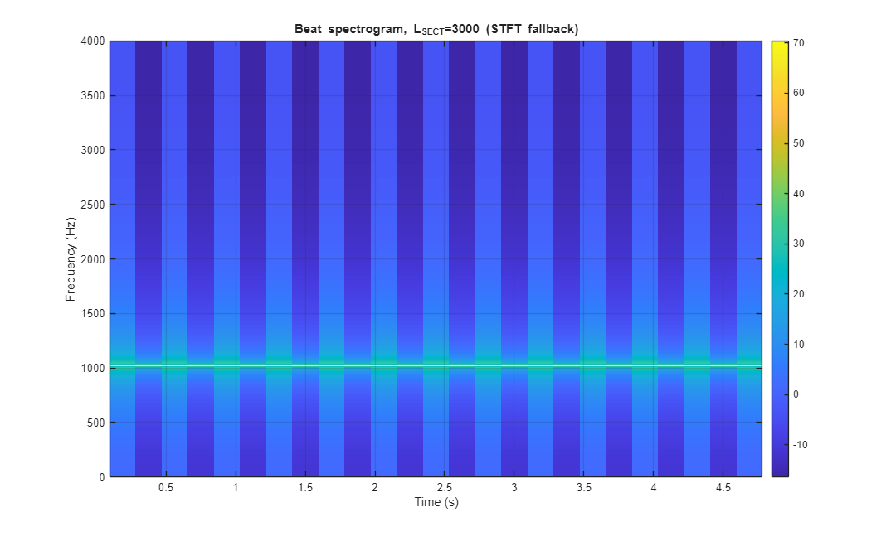
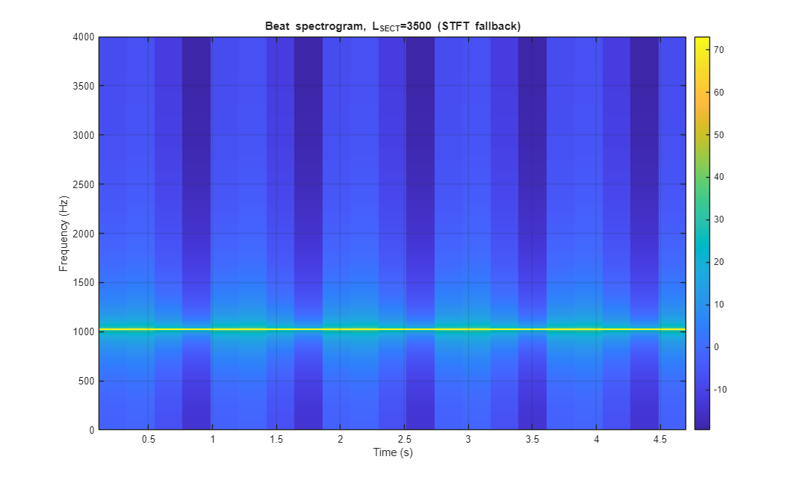
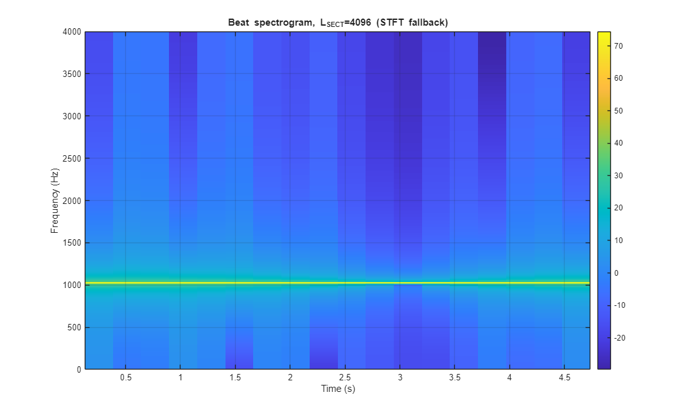
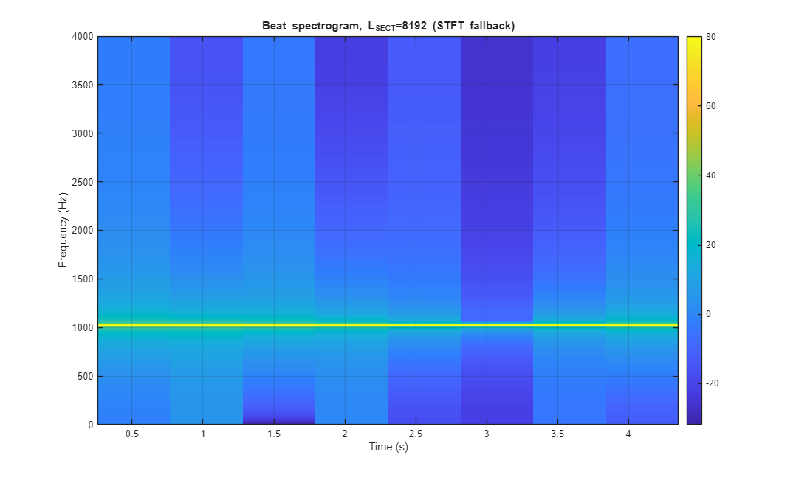

Lab S-7: Spectrograms of AM and FM Signals -- Benson Willie
Contents
2.1.1 MATLAB Code for Beat Signals
Amp = 10;
fc = 1024;
fDelta = 4;
phic = 2*pi*rand;
phiDelta = 2*pi*rand;
tStart = 0;
tStop = 5;
fs = 8000;
tt = tStart:1/fs:tStop;
xx = Amp*cos(2*pi*fc*tt + phic) .* cos(2*pi*fDelta*tt + phiDelta);
figure; plot(tt, xx); xlim([0 0.5]); grid on;
title('Beat signal, f_\Delta = 4 Hz');
xlabel('Time (s)'); ylabel('Amplitude');

2.1.2 Beat Note Spectrograms
f1 = fc - fDelta;
f2 = fc + fDelta;
disp("Expected spectral lines (Hz): " + f1 + " and " + f2);
Llist = [256 512 1024 2048 2500 3000 3500 4096 8192];
for Lsect = Llist
do_spec(xx, fs, Lsect, sprintf('Beat spectrogram, L_{SECT}=%d', Lsect), false);
end
Lsect_min = 3000;
Tsect_min = Lsect_min/fs;
Expected spectral lines (Hz): 1020 and 1028
        
2.1.3 Inverse Relationship: Section Length vs Frequency Resolution
df = abs(f2 - f1);
C = df * Tsect_min;
disp("Computed C = " + C);
fDelta2 = 16;
f1b = fc - fDelta2;
f2b = fc + fDelta2;
df2 = abs(f2b - f1b);
Tsect_pred = C/df2;
Lsect_pred = Tsect_pred * fs;
Lsect_use = 1024;
disp("Predicted Tsect for fDelta=16: " + Tsect_pred + " s");
disp("Predicted Lsect (theoretical) for fDelta=16: " + Lsect_pred);
disp("Using Lsect = " + Lsect_use + " samples for spectrogram.");
xx2 = Amp*cos(2*pi*fc*tt + 2*pi*rand) .* cos(2*pi*fDelta2*tt + 2*pi*rand);
do_spec(xx2, fs, Lsect_use, ...
sprintf('f_\\Delta=16 spectrogram, L_{SECT}=%d', Lsect_use), false);
Computed C = 3
Predicted Tsect for fDelta=16: 0.09375 s
Predicted Lsect (theoretical) for fDelta=16: 750
Using Lsect = 1024 samples for spectrogram.
Functions
function do_spec(x, fs, Lsect, titleStr, twoSided)
if nargin < 5, twoSided = false; end
figure;
if exist('plotspec','file') == 2
if twoSided
plotspec(x + 1j*1e-12, fs, Lsect);
else
plotspec(x, fs, Lsect);
end
colorbar; grid on; title(titleStr);
return;
end
overlap = floor(Lsect/2);
hop = Lsect - overlap;
Nfft = Lsect;
n = (0:Lsect-1).';
w = 0.54 - 0.46*cos(2*pi*n/(Lsect-1));
nFrames = floor((length(x) - Lsect)/hop) + 1;
S = zeros(Nfft, nFrames);
for m = 1:nFrames
idx = (1:Lsect) + (m-1)*hop;
frame = x(idx);
frame = frame(:).*w;
S(:,m) = fft(frame, Nfft);
end
T = ((0:nFrames-1)*hop + Lsect/2)/fs;
if twoSided
Splot = fftshift(S,1);
F = (-Nfft/2:Nfft/2-1)/Nfft * fs;
else
halfN = floor(Nfft/2);
Splot = S(1:halfN+1, :);
F = (0:halfN)/Nfft * fs;
end
Mag = 20*log10(abs(Splot) + 1e-12);
imagesc(T, F, Mag);
axis xy; colorbar;
xlabel('Time (s)'); ylabel('Frequency (Hz)');
title([titleStr ' (STFT fallback)']);
grid on;
end